Les expositions saisonnières
Niché au coeur du Haut Ségala dans le village de Latronquière, le musée a pour vocation de diffuser l'art contemporain dans le Nord du Lot. Il présente en permanence les sculptures de Gabriel Elbaz Kercoff, et accueille également les expositions d'autres artistes proposant des oeuvres de qualité. Ensemble, ils enrichissent l'expérience du visiteur.

Lise Dufour-Mourens
Cinq mots lui sont essentiels : couleur, femme, liberté, mouvement, vie. Des créations et émotions autour du corps et de la danse avec l'encre sur toile comme moyen d'expression favor. Son rôle d'artiste : "c'est d'embellir la vie de tous les jours et de faire en sorte que nous puissions aller vers ce qui donne un sens à la vie"..."La beauté".
www.lise-dufaur-mourens.odexpo.com

Macha
Mach est une artiste d'origine russe. Depuis une décennie elle pratique la photographie et la peinture abstraite. Dans toute leur pureté, les oeuvres en noir et blanc deviennent ici le moyen d'explorer l'harmonie et le chaos.
m.achk.a

Evelyne Cassan
Elle axe sa pratique sur le dessin de nu au pastel et craie sèche, sur des modèles vivants en ateliers collectifs. Initiée au nu dans l'atelier du peintre Claude LeBoul, en région parisienne, elle participe à de nombreuses expositions sur Montreuil. Puis arrivée dans le Lot il y a 20 ans, elle a proposé des ateliers scolaires au Musée Martin à Cahors.

Marie Brosson
Marie Brosson est ébéniste de métier et passionnée par le travail du bois. C'est le travail de la feuille de placage qui a sa préférence. Elle découpe, plie et assemble pour donner vie à ses origamis de bois atypiques et aériens.
marieb.moy

Henri Desfaucheux
Artiste habitant à Latronquière, Roger Desfaucheux a sculpté toute sa vie durant. Ce poète ayant pratiqué l'art brut à ses heures, nous propose ici, toutes en délicatesse, des sculptures en bois-métal, carton et papier qui nous font voyager jusqu'au pays du rêve et nous invitent simplement à nous émouvoir.
Henri Desfaucheux
Artiste habitant à Latronquière, Roger Desfaucheux a sculpté toute sa vie durant. Ce poète ayant pratiqué l'art brut à ses heures, nous propose ici, toutes en délicatesse, des sculptures en bois-métal, carton et papier qui nous font voyager jusqu'au pays du rêve et nous invitent simplement à nous émouvoir.

Christophe Dougnac
Peintre, auteur et inventeur d'histoires. Il explore les frontières entre images et récit pour donner naissance à ses mondes imaginaires sous formes de romans illustrés. Ces oeuvres picturales, à l'aquarelle, l'huile, l'acrylique ou le dessin, s'inspirent de la pop culture, du steampunk.
www.christophedougnac.fr
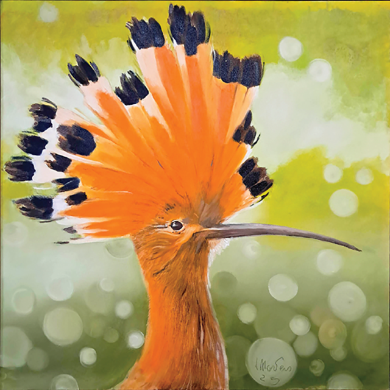
Jérôme Montens
Artiste animalier, il vous invite à une balade contemplative et poétque au coeur du Haut-Ségala et au-delà. Redécouvrez la faune discrète et endémique, ce "petit peuple silencieux" qui anime nos paysages et que l'on ne remarque presque plus...
www.jeromemontens.com
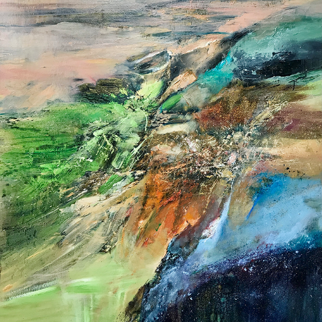
Jacques Quaggio
décrit ses oeuvres comme des voyages intérieurs, fruit de ses propres émotions esthétiques, du travail de son corps dans l'espace, de sa respiration, de la mémoire de la toile. L'observateur pourra, lui aussi, voyager, laissantson regard se perdre, de près ou de loin, afin d'interpréter selon sa propre sensibilité les formes et espaces créés.
Jacques Quaggio
décrit ses oeuvres comme des voyages intérieurs, fruit de ses propres émotions esthétiques, du travail de son corps dans l'espace, de sa respiration, de la mémoire de la toile. L'observateur pourra, lui aussi, voyager, laissantson regard se perdre, de près ou de loin, afin d'interpréter selon sa propre sensibilité les formes et espaces créés.
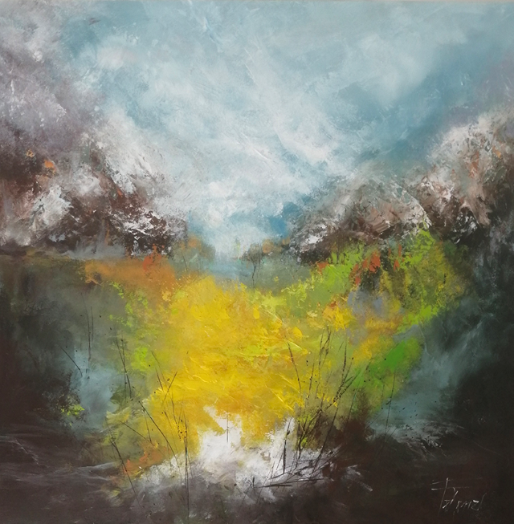
Felenzi
Cette artiste lotoise se place dans la spontanéité du geste, la liberté immédiate que lui apporte la peinture acrylique. Elle utilise pinceaux, spatules, brosses, éponges, tout ce qui peut lui donner des effets de matières, de traces, d'empreintes... Elles restitue ses impressions, le souvenir des choses, d'un paysage, d'une lumière, d'une atmosphère qui la touchent.
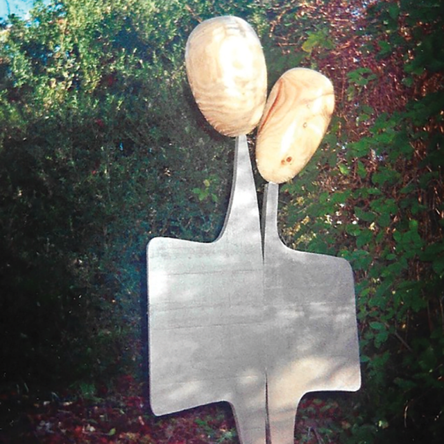
Serge Vial : L'art de rien
Pour cet artiste basé à Villefranche-de-Rouergue, le bois en tant que matière est presque une sculpture par lui-même. Il a un faible pour les courbes, les arcs, les sphères avec lesquels on peut journaliste à l'infini... Il a pour coutume de dire que la sculpture est la langue des formes, et qu'un espace Sans sculpture est en partie vide.
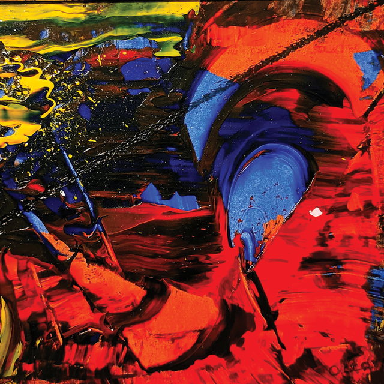
Octave A.
Octave, peintre d'origine francohispanique, murmurant à l'oreille des poneys pendant la moitié de sa vie, s'est mis à peindre par hasarden foulant l'asphalte de son misérable inconscient. Il nous propose, ce mois-ci, ses peintures acryliques abstraites.
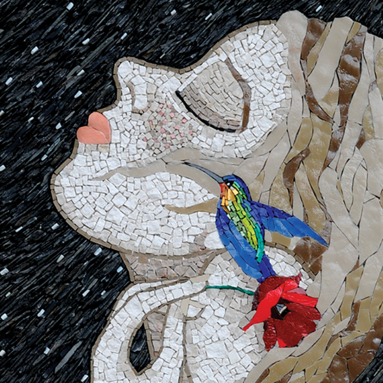
Lise Arcangeli
Mosaïste d'art, plasticienne, passionnée par le mélange des genres et des matières. Son travail s'articule autour de personnages de l'enfance, de l'animal et des arbres, avec une naîveté assumée et poétique. Elle joue aussi du chemin intuitif entre rêve et abstraction, une frontière ténue et mouvementée, guidée par les caprices du marbre, de l'ardoise et du verre.
Lise Arcangeli
Mosaïste d'art, plasticienne, passionnée par le mélange des genres et des matières. Son travail s'articule autour de personnages de l'enfance, de l'animal et des arbres, avec une naîveté assumée et poétique. Elle joue aussi du chemin intuitif entre rêve et abstraction, une frontière ténue et mouvementée, guidée par les caprices du marbre, de l'ardoise et du verre.
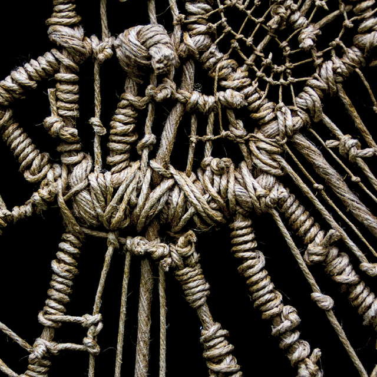
Le Pingoin Elastique
Le Pingouin Elastique tisse ses toiles. Entre réseaux routiers et tissus organiques, rythmes et chaos, free jazz et poésie noire... Des improvisations filaires qui, à l'instar de nuages, donnent à voir ce que l'on y apporte.
Facebook: lepingouinelastique
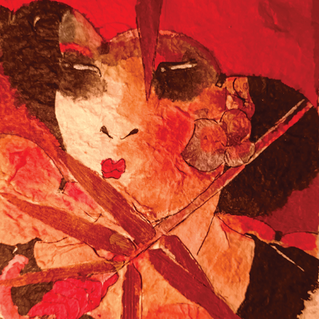
Valéry Lanou / Michel Huisman
Réalisateur, metteur en scène et dramaturge belge. Depuis l'enfance, il n'arrêtera pas de dessiner, de peindre, mais débutera dans le cinéma. A 25 ans il écrit et réalise "Ras le bol" un long métrage. Il dirigera la chaîne TV de Bruxelles. Il expose à Bruxelles, en France, Viêt Nam, Chine et Inde. Son sujet récurrent: "Les Femmes dans tous les états".
Facebook: ValeryLanou
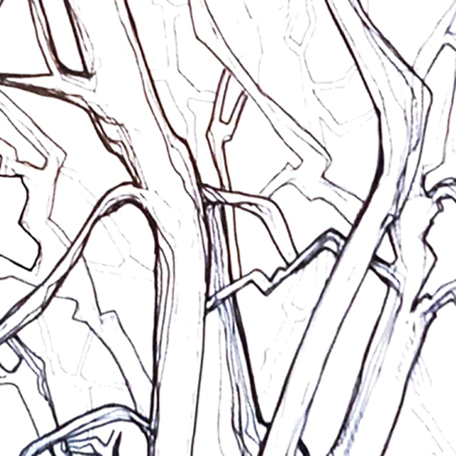
Sabrina Syord
Explore le blanc comme élément central, à la fois espace de respiration et support de formes graphiques et abstraites. Inspirée par la nature et des éléments figuratifs, elle cherche à en saisir l'essentiel pour les réinterpréter de manière abstraite, entre onirisme et réalité, invitant le spectateur à la rêverie et à l'imagination.
Facebook: sabrina syord
Sabrina Syord
Explore le blanc comme élément central, à la fois espace de respiration et support de formes graphiques et abstraites. Inspirée par la nature et des éléments figuratifs, elle cherche à en saisir l'essentiel pour les réinterpréter de manière abstraite, entre onirisme et réalité, invitant le spectateur à la rêverie et à l'imagination.
Facebook: sabrina syord

Elise Mih
Peintre et céramiste ayant tant d'histoires à raconter. Elise aime faire
parler les corps des femmes sur différents supports. Elle utilise terre,
peinture, aquarelle...
Son univers coloré est un mélange d'Art Brut et d'Art Populaire. "Tous les moyens
sont bons pour exprimer la parole des femmes"... Originaire de Metz, elle
vit désormais à Gorses dans le Lot.
Facebook: Elise Mih
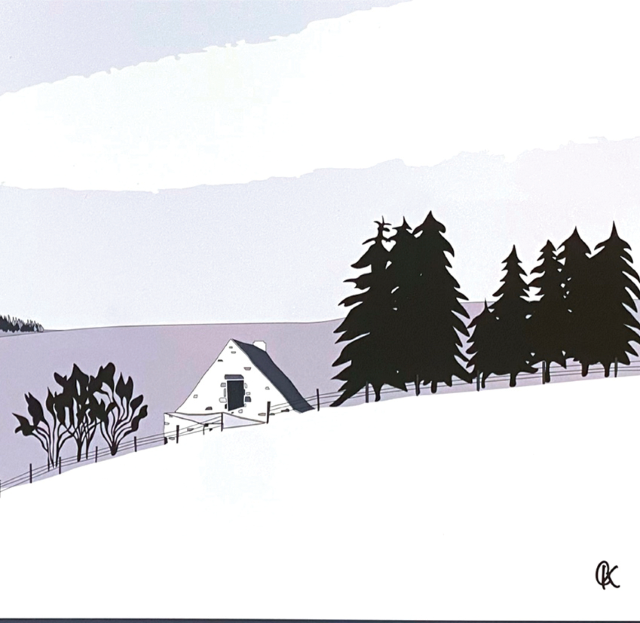
My-kc-Square
avec sa tablette et son stylet, crée des tableaux en impression numérique. Elle s'appuie sur une photo qu'elle redessine traits pour traits, avec sa sensibilité artistique, mais toujours soucieuse du moindre détail architectural. Des tableaux modernes, minimalistes qui invitent à découvrir ou redécouvrir des paysages, villes et villages...
www.mykcs.fr
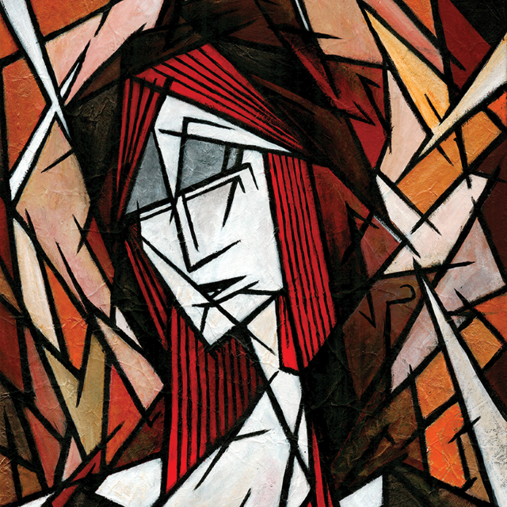
Yannick G
Affilié aux courants d'Art Singulier et d'Expressionnisme Figuratif, il aborde et transforme ses sujets de composition à travers une effusion de lignes droites, toujours en quête d'une harmonie graphique, de ce moment où l'équilibre dans le déséquilibre est atteint.
www.scories-dans-la-brume.fr
Yannick G
Affilié aux courants d'Art Singulier et d'Expressionnisme Figuratif, il aborde et transforme ses sujets de composition à travers une effusion de lignes droites, toujours en quête d'une harmonie graphique, de ce moment où l'équilibre dans le déséquilibre est atteint.